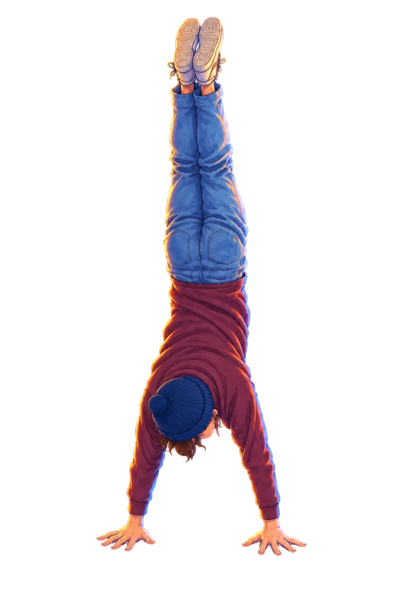
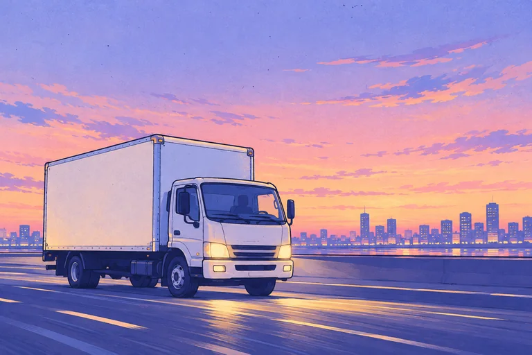
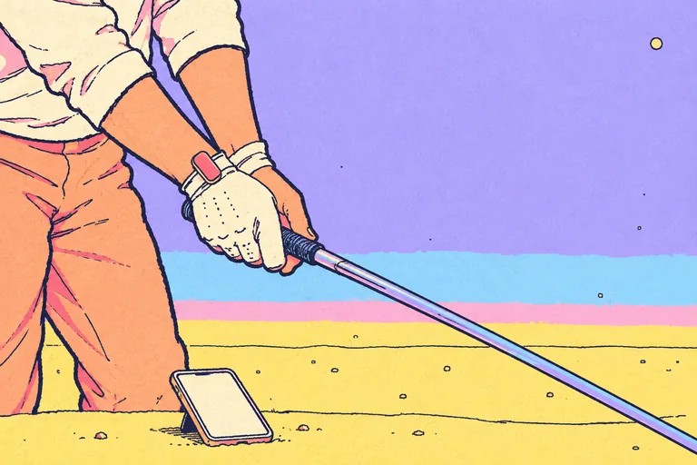
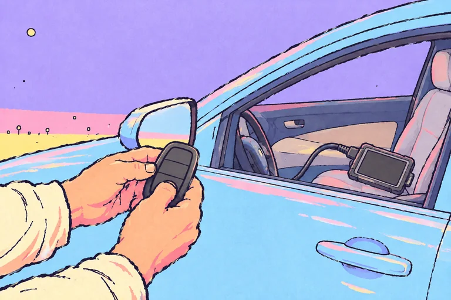
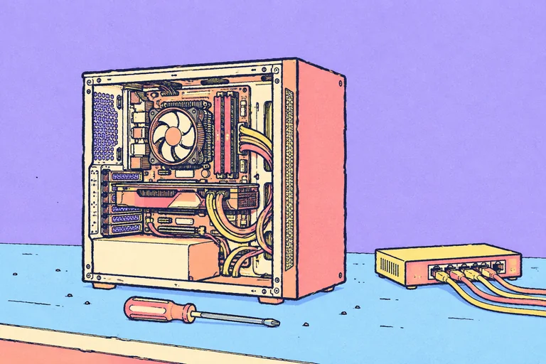

Call ingestion
Getting the company’s calls into one pipeline.
ENGINEER / ML / VIDEO EDITOR

Currently at Safe Ship Moving Services.
Optimized our MongoDB usage and cut the bill nearly in half.
Getting the company’s calls into one pipeline.
The infrastructure that analyses those calls.
Nearly half the bill: about $6k less a month.
Real-time swing analysis from wearable sensors (Flutter, Dart, Firebase, Bluetooth). This is my own swing run through MediaPipe pose: joint angles, hand path, tempo.
30+ FPS Lucas–Kanade point tracking.
Keras CNN · 98% on MNIST.
−7% RMSE with a log-price target.
Lexer, parser and code generator in C for a stack-based VM.
Parses Mikal appointment reports into busy blocks.
also: all repos ↗
Nowcurrent job
Safe Ship Moving Services

Call ingestion, AI call analysis, and a MongoDB bill cut nearly in half.
2024Sep 2024 — May 2025
Extropian · Orlando, FL

Golf app: Bluetooth sensors, swing metrics, Firebase.
2022Aug 2022 — Dec 2023
Sonic Locksmith · Hollywood, FL

Push-to-start keys and programming.
2018Sep 2018 — Present
Freelance · Multiple locations

Builds, networks, virtual machines.
20142014 — 2020
Freelance · Remote
COD edits, compositing, camera tracking. Led a team of 4 editors.
I'm a full-stack engineer focused on machine learning and data science, but what I really enjoy is solving problems — with tools I've picked up or ones built from scratch. I'm addicted to learning new things and real progress.
JavaDartPythonRustJavaScriptReactNodeRC/C++FlutterFirebaseAWSMongoDB
p.s. after dark, one of the falling stars carries a song.